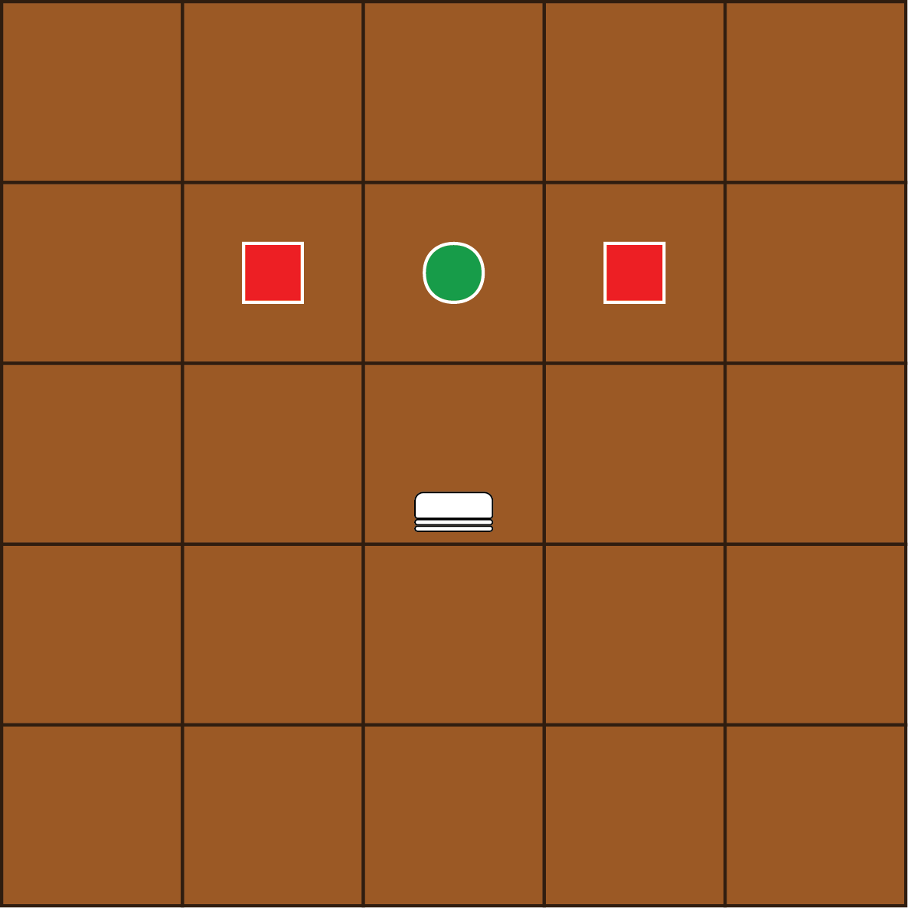
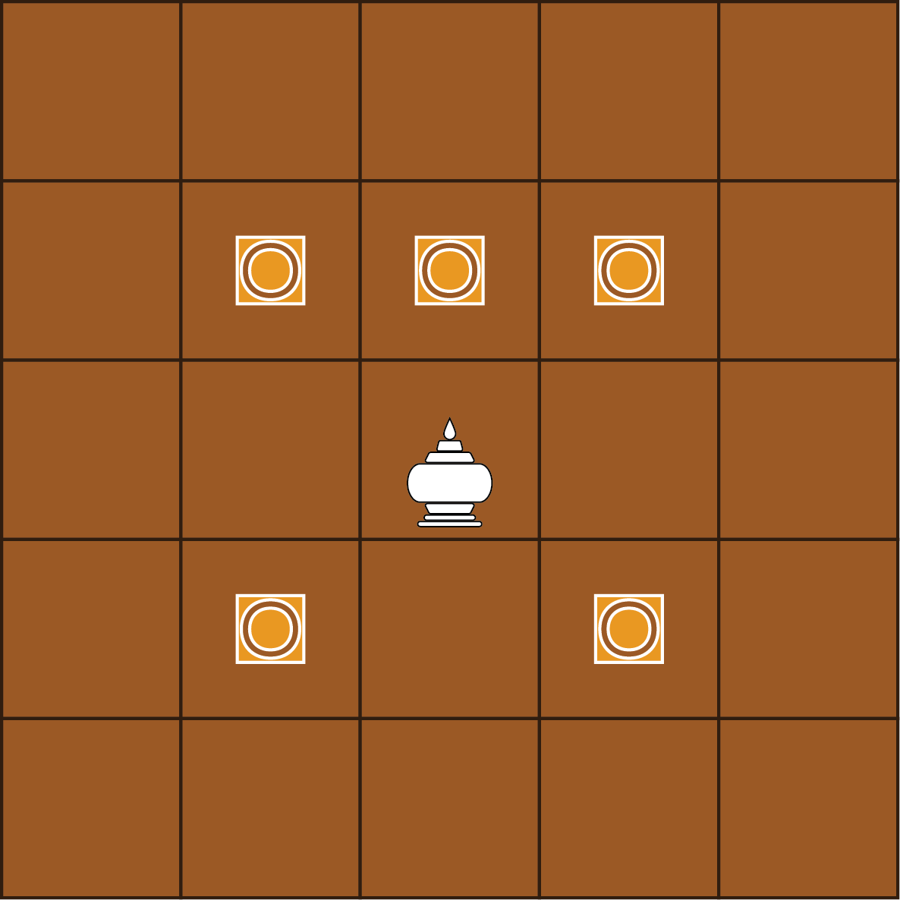
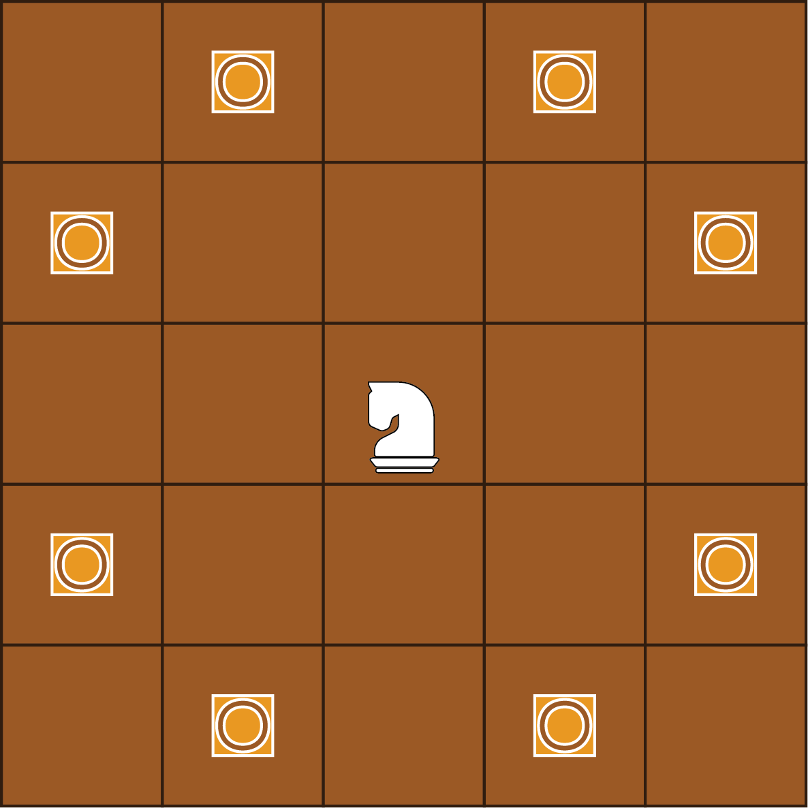
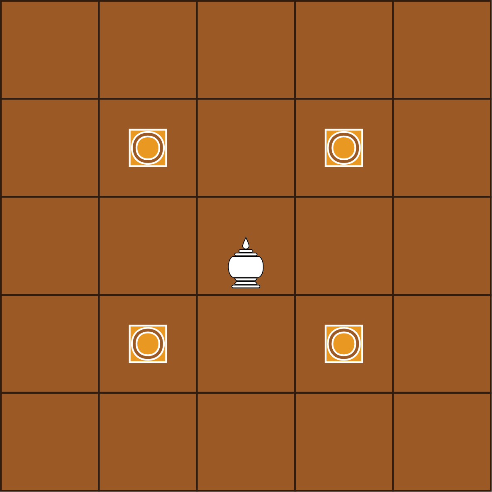
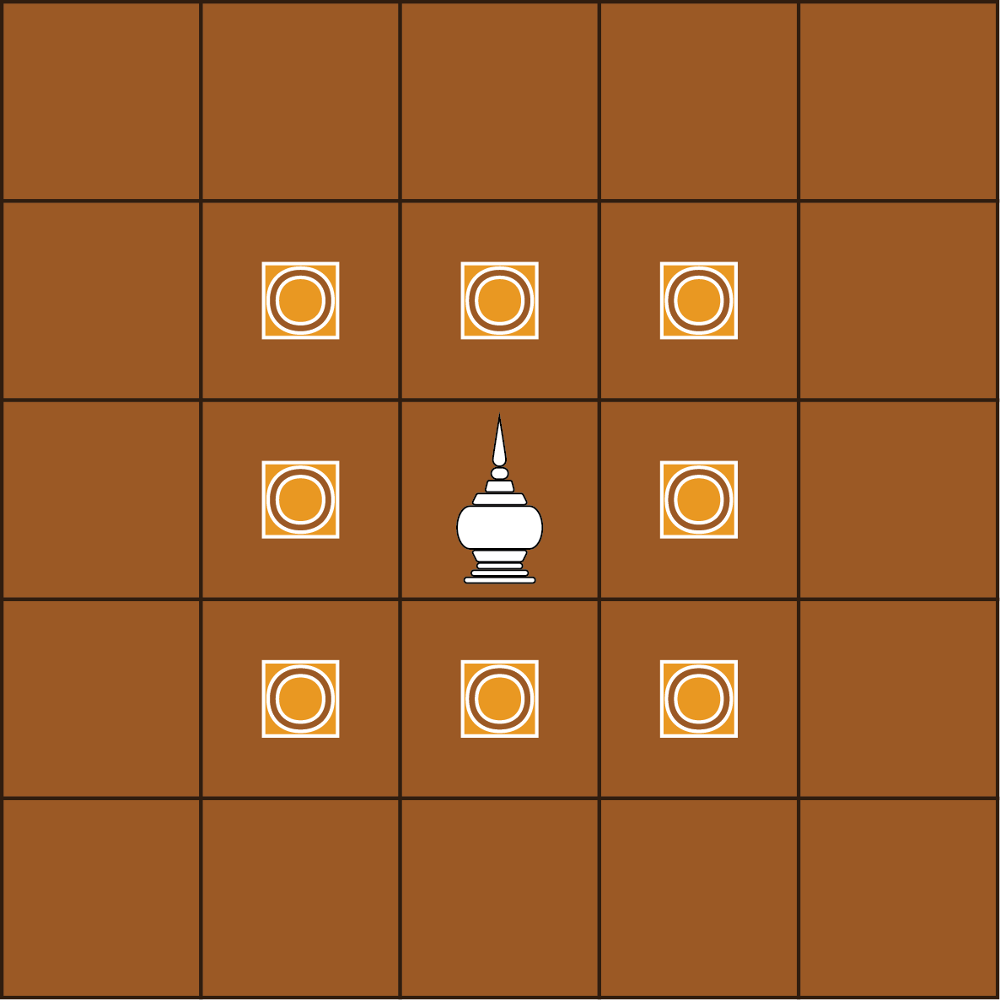
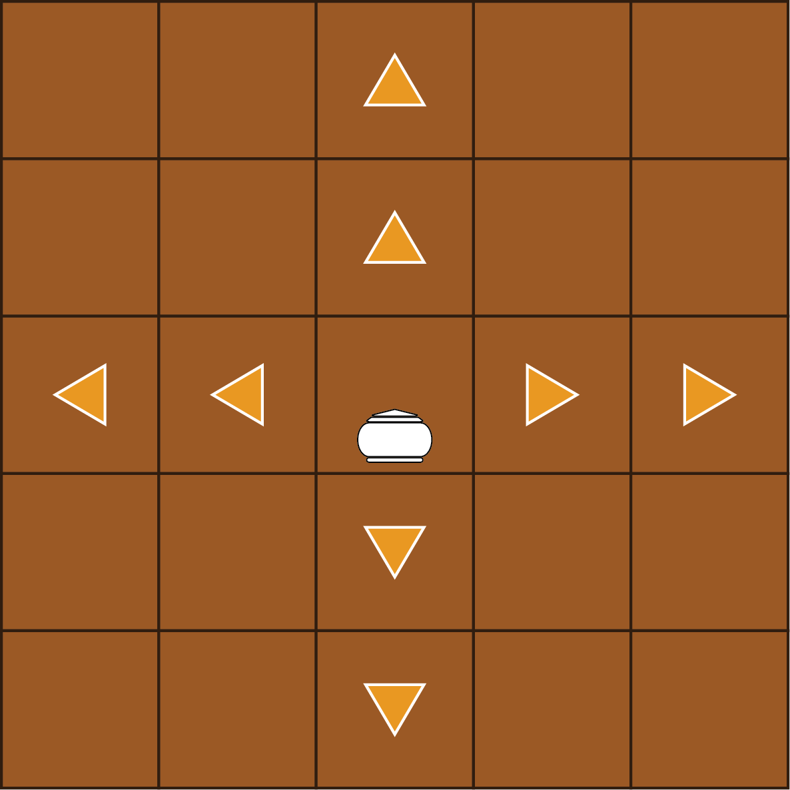

Ouk or Chaktrang, a captivating and complex variant of traditional board game, has enthralled players in Cambodia for centuries. Its unique board setup, diverse pieces, and intricate rules offer a challenging test of tactical skill and strategic foresight. With integrated AI-powered player, this game bring more fun, creativity, and bridge the gap between ancient square board and modern digital screen.
Similar to internetional or western chess, it requires two people or two teams to play against each other on the 8 by 8 square board (64 tiles) which is devised into two groups.
There are 16 pieces of each group as below:
- 1 of King call Sdach or Ang or Khon
- 1 of Queen call Neang
- 2 of Bishop call Koul
- 2 of Knight call Ses
- 2 of Rook call Touk
- 8 of Pawn call Trey, and will become Trey Bork (Promoted Pawn) after reaching the opponent territory
In addition, to win the game player need to hunt the king by take turn moving each piece in unique way and special rules as follow.
|  | Trey (Pawn) moves and captures like a pawn in international chess (But cannot move two steps on the first move and, therefore, cannot be captured en passant). A pawn that reaches the sixth rank is always promoted to a Trey Bork (Neang). |
|  | Koul (Bishop) moves one step in any diagonal direction or one step forward. |
|  | Ses (Knight) moves like a knight in international chess: two steps in one direction and then one step perpendicular to that movement. It jumps over any pieces in the way. |
|  | Neang (Queen) moves one step in any diagonal direction. Unofficially, She can jump at the 2nd case straight ahead at her first move (This special move is no more used in Thailand). |
|  | Ang (King) moves like a king in international chess one step in any direction. Unofficially, He is allowed to make a Ses (knight jump) at his first move (This special move is no more used in Thailand). The game ends when the king is checkmated. |
|  | Tuuk (Rook) moves like a rook in international chess: any number of steps horizontally or vertically. |